Three kilometres below the undercity, a 100-tonne liquid-xenon time-projection chamber waits for a dark-matter particle to bump a xenon nucleus. The rock overhead kills the cosmic-ray muons; what remains is the neutrino fog — and every number on this page traces back to the simulation that produced it.
A shielding onion in a cavern: rock, water, scintillator, steel, and finally 100 tonnes of the quietest liquid on Mars.
The dark-matter experiment lives in a 32 m rock cavern at the bottom of a 3 km shaft. From outside in: a ⌀14 × 15 m ultrapure-water tank (Cherenkov muon veto and γ/neutron shield), a Gd-doped scintillator layer that names every neutron by its 8 MeV capture cascade, a double-walled vacuum cryostat holding the xenon at 178 K, and the ⌀3.55 m × 3.55 m drift TPC — a 24-facet PTFE reflector barrel lined with 58 copper field-shaping rings. The geometry is a faithful ×3 linear scale-up of a real 4-tonne-class detector, extracted dimension by dimension from its Geant4 source.
Why bury it? 3 km of rock attenuates the cosmic-muon flux by roughly six orders of magnitude. What the rock cannot stop — solar neutrinos — becomes the irreducible background floor. The experiment is designed to run into that fog deliberately.
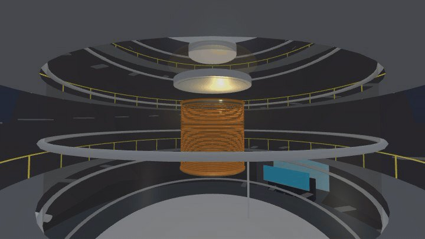
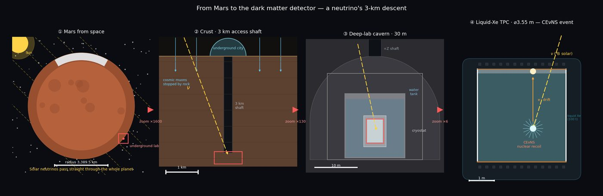
Every event is two flashes: S1 now, S2 up to 2.6 ms later. The delay is the depth; the light pattern is the position.
A particle deposits energy in the liquid xenon and makes prompt scintillation — S1, nanoseconds wide, collected mostly by the 1791 bottom PMTs. The same deposit liberates ionization electrons, which drift upward at 1.35 mm/µs under a 100 V/cm field. Crossing the liquid surface into the thin gas layer, they electroluminesce into a second, much larger flash — S2 — whose footprint on the 1521 top PMTs pinpoints (x, y). The S1–S2 delay gives z. Three-dimensional positioning turns the outer xenon into shielding for the inner xenon.
The two flashes also carry particle identity. Electron recoils (β/γ background) make proportionally more S2; nuclear recoils (what a WIMP would make) are charge-starved. In log₁₀(S2/S1), the two populations split into clean bands — the response model puts ER at 2.4–2.8 and NR at 1.6–2.0, a 99.7 % electron-recoil rejection at the analysis cut.
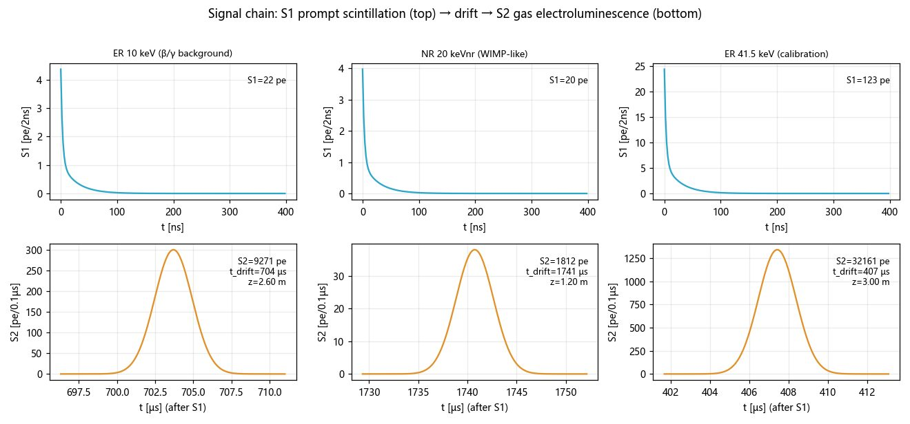
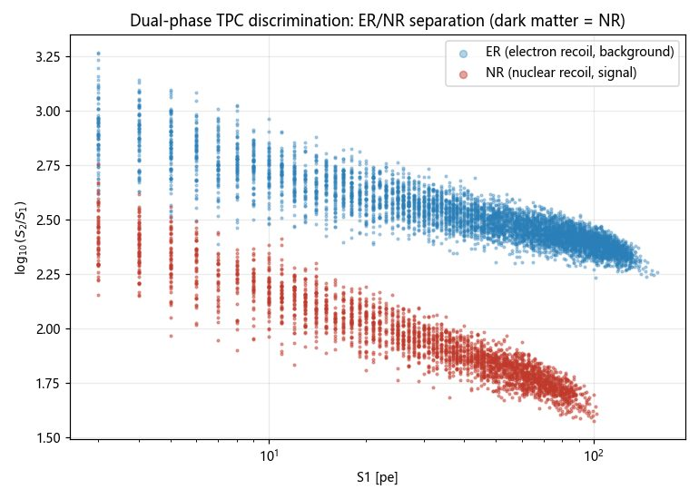
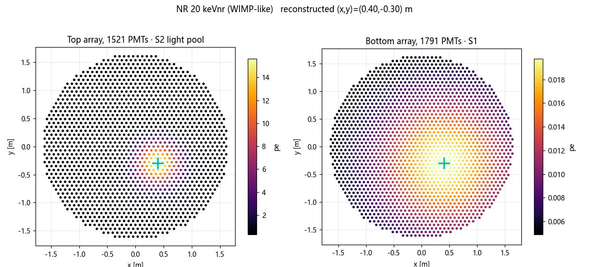
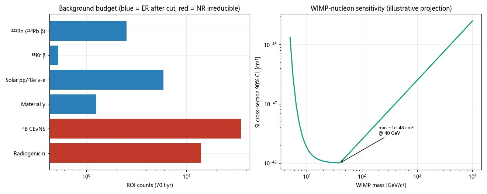
Every headline number, and which run produced it.
| Claim | Value | Produced by |
|---|---|---|
| Active LXe mass (⌀3.55 × 3.55 m × 2.86 t/m³) | 100.5 t | mars_deep_lab/sim/signal_chain_sim.py |
| Fiducial mass / yearly exposure | 70.2 t / 70.2 t·yr | mars_deep_lab/sim/signal_chain_sim.py |
| Drift velocity / max drift time | 1.35 mm/µs / 2.6 ms | mars_deep_lab/sim/signal_chain_sim.py |
| Gain constants g1 / g2 | 0.09 pe/ph / 20 pe/e⁻ | mars_deep_lab/sim/signal_chain_sim.py |
| ER rejection at band cut | 99.7 % | mars_deep_lab/sim/signal_chain_sim.py → discrimination band |
| Background in ROI (ν-fog dominated) | 59.3 cts / 70 t·yr | mars_deep_lab/sim/signal_chain_sim.py → budget |
| SI sensitivity floor (illustrative projection) | 1×10⁻⁴⁸ cm² @ 40 GeV | mars_deep_lab/sim/signal_chain_sim.py |
| PMT counts, hex-packed (area ×9 of the 4 t reference) | 1521 top + 1791 bottom | hexPack() — sim + viewer module, identical layouts |
| Detector geometry (40+ dimensions, ×3 scale-up) | 8 source files | mars_deep_lab/GEOMETRY_REF.md (Geant4 extraction) |
| City scene budget | 69,758 tris ≤ 80 k | mars-unit-flow validate_unit.mjs |
| Neutrino-event animation, drift compressed | 5 s cycle | viewer/units/sci-deeplab-01.js (animate FSM) |
| TES: transition / bath temperature | 171 / 100 mK | cosmic_microwave/design_tables (interface-frozen) |
| TES: σ(r) total error budget vs target | ≈8×10⁻⁴ < 1×10⁻³ | cosmic_microwave/DESIGN_REPORT_v2.md §10 |
| TES: real-sky foreground residual (Planck templates) | Δr 7.7×10⁻⁴ @ fsky 0.66 | cosmic_microwave/run_pysm_xval.py |
| TES: dual-band crossover split | 119–152.4 / 152.4–190.9 GHz | TES/mission_tes_design_v2.py (Plan A) |
| TES: full-wave cascade coupling, both arms | 77.1 / 78.0 % | TES/hfss/cascade_v4.py → cascade_v4.csv |
| TES: island saturation power / frozen leg length | 0.848 / 0.668 pW · 742.6 / 953.4 µm | TES/comsol/tes_island_dual140/166.java |
| TES: saturation margin under process spread | 2.50 ± 0.07, P(sat)=0 | TES/mc_tolerance.py |
| TES: µMUX comb (Qc / spacing / neighbor sep.) | 2×10⁴ · 3 MHz · 48 MHz | TES/umux/umux_design.py → freq_plan_demo64.csv |
| TES: µMUX channel yield at σf = 1 MHz | 93.7 % | TES/mc_tolerance.py |
| TES: 3f₀ filter re-entry (drives the mesh LPF spec) | −0.4 dB @ 405 / 515 GHz | TES/hfss/bpf_wideswp_v2.py → widesweep csv |
Honesty note. The signal chain is a NEST-style response model in Python, not a photon-by-photon Geant4 Monte Carlo — the geometry came from Geant4 source, but the optical MC itself was never compiled (missing deps on the shared VM; the substitution was reviewed and approved). The sensitivity curve is an illustrative projection, not a profile-likelihood analysis. The JSON the city loads carries the same caveat.
The review caught real physics errors. The GIF caught real engine physics.
The PMT count was wrong by 9×. The first build copied the reference detector's 169 + 199 tubes verbatim. But a ×3 linear scale-up means ×9 the array area — same 3-inch tubes, nine times as many. Fixed to 1521 + 1791. Then the window size was wrong twice: first scaled ×3 along with the detector (windows 2.16× wider than their hex pitch — massive overlap), then "fixed" to the casing diameter, still 2 % too wide. The correct number was in our own geometry table all along: the photocathode is ⌀64 mm, the casing ⌀76 mm.
The electron lifetime contradicted the drift length. τₑ = 1 ms sounds clean until you notice the full drift is 2.6 ms — cathode events would lose 93 % of their S2. Review flagged it; purified to τₑ = 15 ms (84 % survival). The background budget was also ~1000× too low and quietly contradicted the "neutrino fog" story the animations were telling — raised to literature scale, the ⁸B CEνNS floor now genuinely dominates.
The first capture recorded a 0.0 MB GIF of pure darkness. Modern three.js uses physically-correct light falloff: point lights that read intensity 15 die within metres, and a 30 m cavern swallowed all of them. The fix was twofold — opaque materials got a same-hue emissive floor, and the S1/S2 flashes became cavern-scale light pulses (intensity 110–140), which is also just better storytelling.
The raised camera teleported to the surface. To fix a too-low viewpoint the capture camera moved to z = 13.5 m — 1.7 m from the exit-zone centre, radius 1.8 m. The engine dutifully decided the player had walked to the exit and faded back to the Martian surface; the "neutrino detection" GIF came back as a starfield. The shot now keeps 5 m of clearance from the door.
A strict ×3 water tank cannot exist. The reference tank is ⌀10 m; ×3 is ⌀30 m — the cavern span. The delivered design uses a two-tier scale: inner detector strictly ×3, outer shielding at spec targets (⌀14 m), a deliberate, documented compression.
From the TES station — the band plan broke first. The original 140 and 166 GHz bands overlapped across 141–161 GHz: fine on separate pixels, impossible to diplex complementarily on one. Fixed at the system level with a 152.4 GHz crossover, which also restored the saturation margin the too-wide filters had eaten.
Everything passed alone; the assembly collapsed. Antenna, diplexer and filters each verified standalone — the first full-wave cascade returned 12–27 % coupling. Four defects dug out over four cascade versions: never-designed 750 µm tee arms, a 390 µm feed line missing from the circuit model, two antenna versions coexisting in different files, and a 40 µm drawing-leftover feed stub that capped one band at 54.5 % — a Bode–Fano wall no matching network could climb. A three-point tail sweep found the real optimum at 150 µm (≈λ/8, not the textbook λ/4; slot loading shifts it), and v4 closed at 77/78 %.
Circuit models flatter dead antennas. A two-element matching study promised 80.5 % on a proposed 119+195 GHz antenna-reuse pair; the converged full-wave cascade returned 42.0 % — the twin-slot's radiation resistance collapses to 6.6 Ω above 190 GHz. The negative result stands in the ledger: high bands get their own antenna, and feasibility verdicts are full-wave or they are nothing.
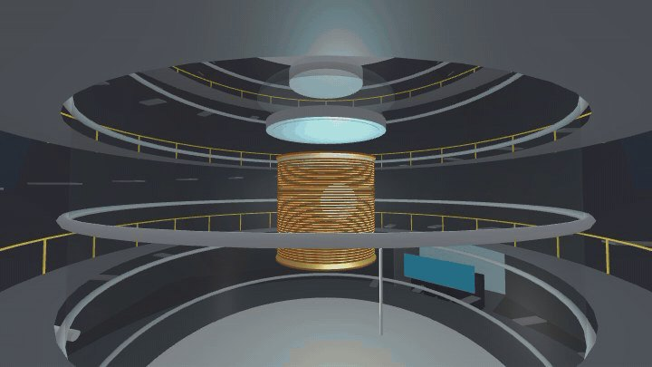
Two more detectors, one in orbit and one at L2.
sci-pan-01 — MiniPAN spectrometer. A compact magnetic particle spectrometer riding the zenith deck of the areostationary relay satellite: dual NdFeB ring magnets, two time-of-flight planes, two pixel trackers and eight silicon-strip layers in a 200 × 200 × 250 mm stack. Modelled geometry-faithful in the orbit view.
TES station — the CMB survey observatory. A cryogenic focal plane of transition-edge sensors at the Sun–Mars L2 halo, mapping the polarized microwave sky from a place with no atmosphere in the way. The sensors sit at 171 mK on a 100 mK bath behind three flared V-groove radiators; the mission error budget closes at σ(r) ≈ 8×10⁻⁴ against a 1×10⁻³ target, and the foreground pipeline survives a real-sky (Planck-template) cross-validation at Δr = 7.7×10⁻⁴ on 66 % of the sky. Visible in the orbit view (?view=cmb) with its survey-scan animation.
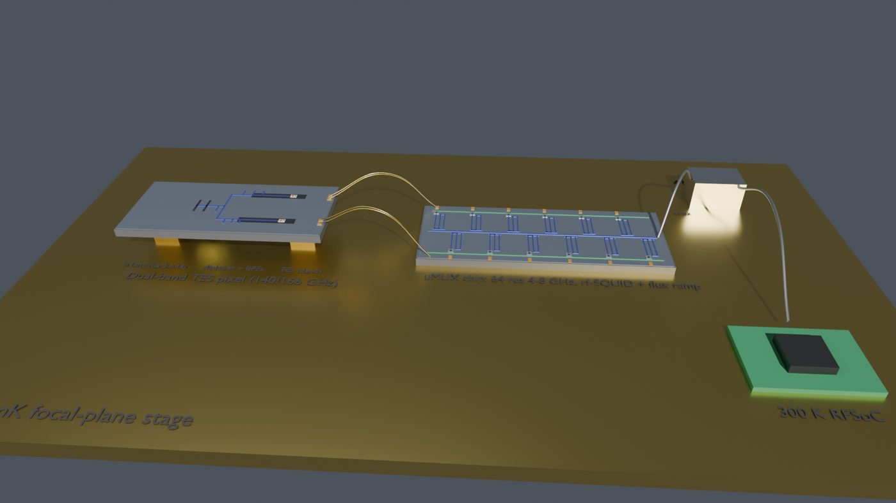
The working pixel is a dual-band diplexer: one twin-slot antenna feeds two bands split at 152.4 GHz (119–152.4 / 152.4–190.9 GHz). Getting one antenna to serve two TES islands honestly took a full-wave cascade — antenna, matching, diplexer tee, band-pass filters, terminations solved together — which closed at 77.1 % / 78.0 % band-average coupling. Each island's saturation power came out of nonlinear thermal FEM (0.848 / 0.668 pW, legs frozen at 742.6 / 953.4 µm), and a Monte-Carlo tolerance run puts the saturation margin at 2.50 ± 0.07 with zero saturation probability across process spread.
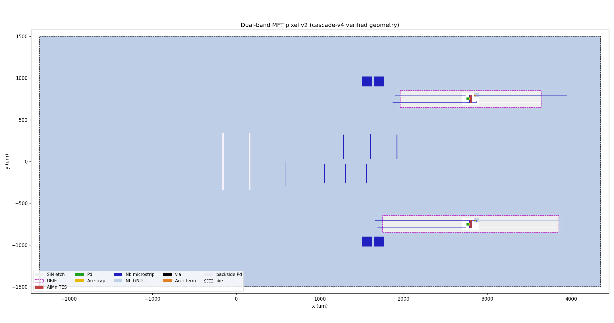
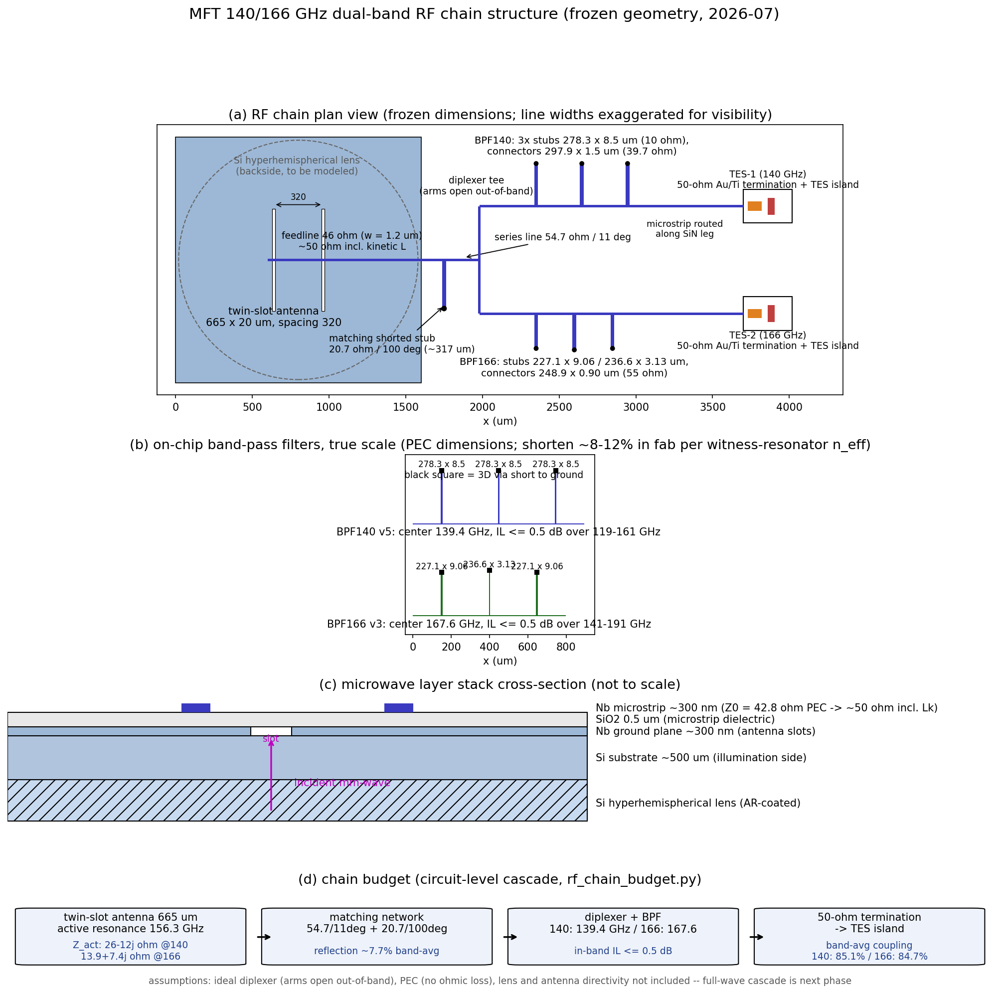
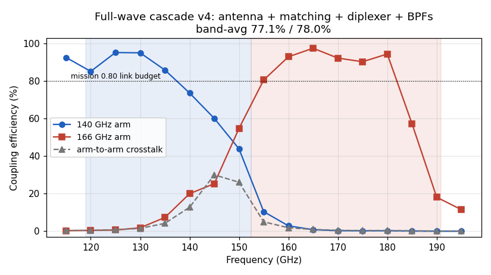
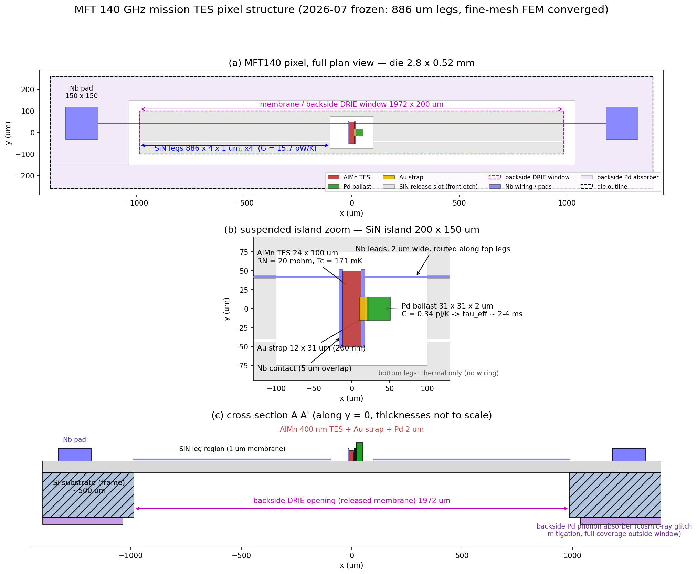
Readout is a microwave SQUID multiplexer: a 4–8 GHz λ/4 CPW resonator comb (Qc 2×10⁴, 3 MHz spacing, 48 MHz physical-neighbor separation via bit-reversal scrambling) with rf-SQUID cells at 60 pH washer inductance and βL 0.78. Channel yield under fabrication frequency scatter is 93.7 % at σf = 1 MHz — the number that turns a post-fabrication trim step from nice-to-have into a requirement.
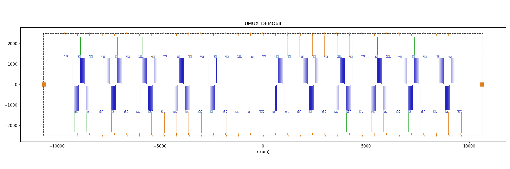
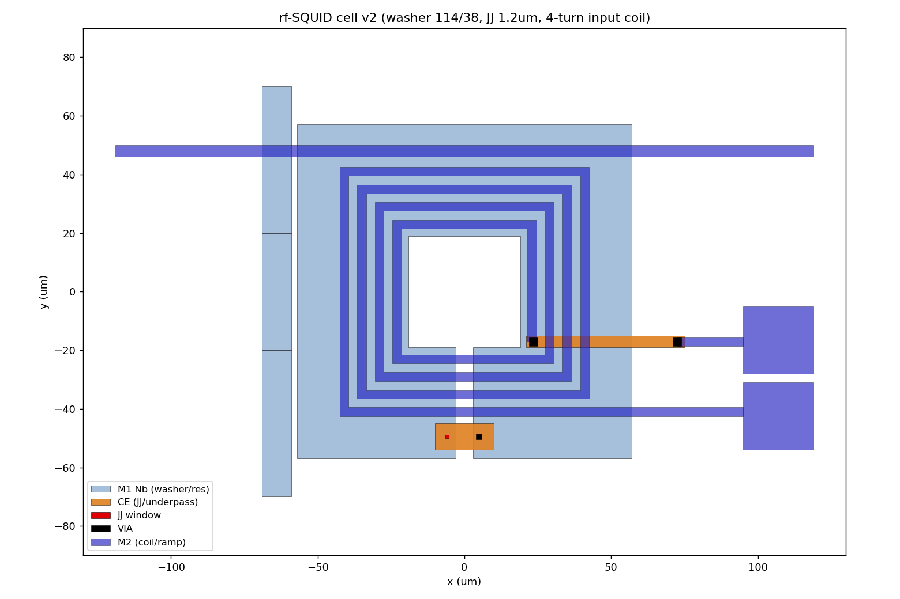
Walk in, look around, trigger an event.
Open the viewer and deep-link straight into the cavern: viewer/?interior=sci-deeplab-01. Walk with WASD; eight proximity cards (water shield, TPC, xenon target, PMT arrays…) pop up as you approach their anchors, each carrying the simulation numbers from the ledger above. Aim at the detector and press V to orbit it — the neutrino-event action button fires the full chain: a cold S1 flash deep in the field cage, an electron cloud drifting up for two compressed milliseconds, then the warm S2 burst in the gas gap that lights the whole cavern.
The 5-second capture loop lives at snaps/anim/sci-deeplab-01.gif; the camera recipe for interior shots (&z= &eye= &pitch=) is documented in the asset checklist.